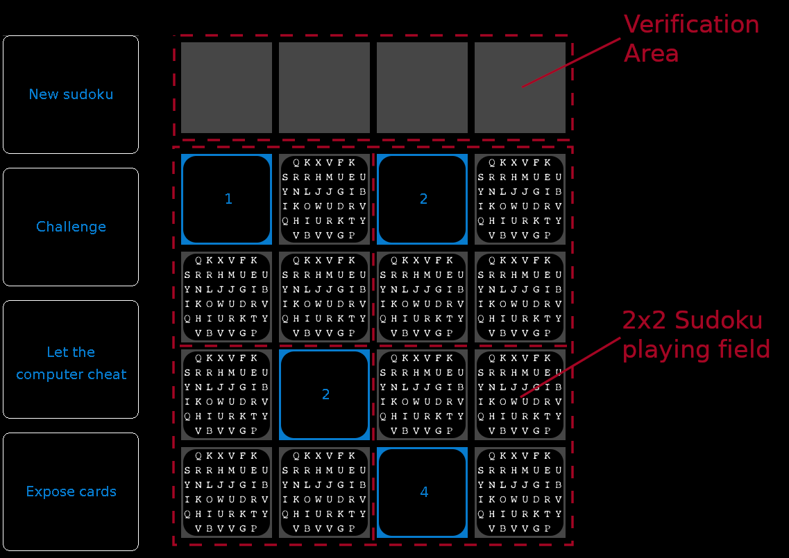
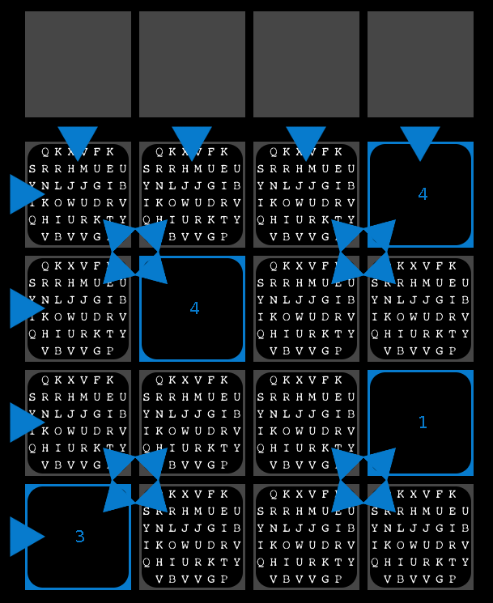

The computer tries to convince you that it solved a \(4 \times 4\) Sudoku without showing you the actual numbers in the single boxes (cells). Zudo-Ku is a simple example of a zero-knowledge protocol.

When starting a new game, a new \(4 \times 4\) Sudoku riddle is created [consisting of four blocks (subgrids) of size \(2 \times 2\), which make up 16 boxes]. The four given numbers are shown at once – one per \(2 \times 2\) subgrid. The computer then covertly solves this Sudoku game.
We assume we play Sudoku with playing cards instead of the usual pen and paper.
1) If you want new numbers (i.e. a new Sudoku puzzle), click on the left button New sudoku.
2) After clicking the button Challenge you can select a row, a column, or a block by clicking on one of the blue arrow indicators.

The cards of the respective row/column/block will be shuffled face down and then exposed to you in the above verification area. If the computer really has a correct solution, then those four cards must always include the numbers from 1 to 4 exactly once.
Check whether the numbers are correct or whether the computer cheated you!
After checking, the computer covers the cards again, shuffles them, and returns them to the board as they were before. The animations don't reveal any information about the order of the numbers – they are just for visualization purposes.
3) Every time you click on Let the computer cheat the computer will add one more wrong number to the Sudoku. Since the numbers are hidden, you do not know which one.
Most zero-knowledge protocols are based on repeating steps. Every time you challenge the computer the probability of revealing the truth (correctly solved vs. incorrectly solved) increases.
Try to find a solution yourself just by using the facts you learned while challenging the computer. Below you can find some answers to these questions.
4) With the button Expose cards the solution of the computer will be revealed. Use it after you are satisfied with the result of the challenges to see what's actually on the board. Remember that in real-life zero-knowledge protocols this is not possible.
Zero-knowledge proofs and protocols are a special part of cryptography. The basic idea is that one party (prover) wants to prove it has some information (secret), without revealing it. Another party (verifier) wants to make sure that the prover actually has that correct information and is not only pretending to possess the information.
Imagine you want to buy a car. The salesperson wants you to prove you have enough money to buy it. But you don't want to reveal to a stranger how much money is on your bank account. As a smart cryptologist you know, that you could use a zero-knowledge proof to show that you have enough money to buy the car, but not reveal how much you actually have.
Such protocols mostly rely on multiple iterations, just as the Zudo-Ku game. With every correctly verified step the chances increase, that the prover is actually in possession of the relevant information.
There are 3 properties important for zero-knowledge protocols:
The idea of this game can be applied even better in real life.
In the simple variant: Take 81 cards with numbers from 1-9 and take a Sudoku riddle. The given (known) numbers are placed visible with the cards.
One person plays to be the prover, solves the Sudoku and puts every card face down. (The prover may or may not cheat and not really solve the Sudoku.)
Either way, the prover tries to convince the other person that he does have a correct solution. The verifying person selects either a row, a column or a subgrid. Then the cards are shuffles. She then checks whether the pack of cards contains each number 1-9 exactly once. If not not she detected the prover to be cheating.
If you play in person you could watch the other person shuffling. Putting the cards back as in this digital game is not feasable in real life. Using one set of cards and checking one topology exclusively leads to a soundness (probability that the prover is caught cheating) with a probability of ≥ 1/3.
In the extended variant you have packs of 3 cards for each cell. By doing it this way, the verifier can check all rows, columns and subgrids multiple times. Now the prover can only cheat by not using the same 3 cards for a unique cell (he might not place {3,3,3} on a cell as expected, but e.g. {3,3,4}). Nevertheless the soundness improves to 8/9.
For more detailed explanations take a look at the underlying paper. [1]
How many challenges are necessary until you believe that the computer has a correct solution of the Sudoku?This plug-in was built with the Java-AWT framework. Therefore, it looks differently from other JCrypTool plug-ins. Feel free to report any problems or bugs to the JCrypTool project.
[1] Zudo-Ku was initially created for the Kryptologikum and implements the ideas presented by Ronen Gradwohl, Moni Naor, Benny Pinkas and Guy Rothblum in "Cryptographic and Physical Zero-Knowledge Proof Systems for Solutions of Sudoku Puzzles".